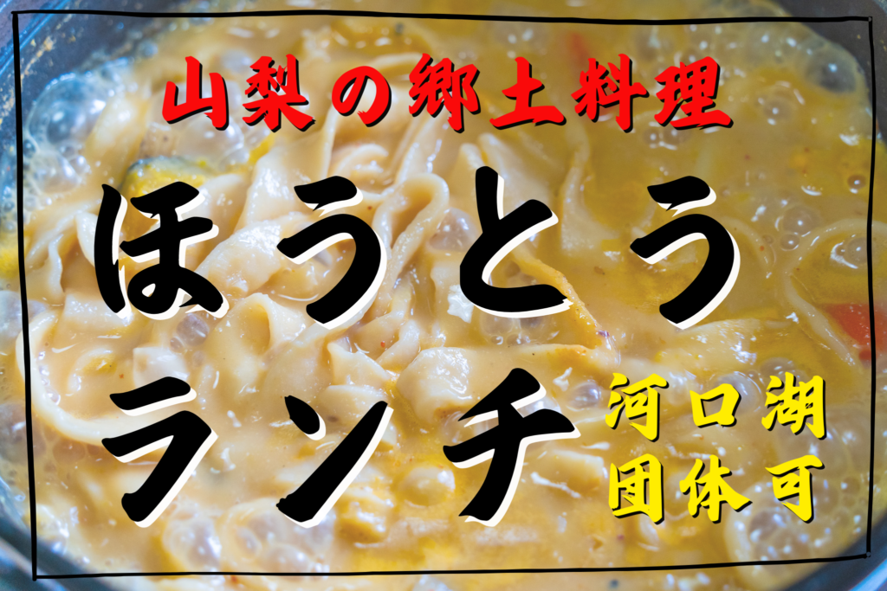
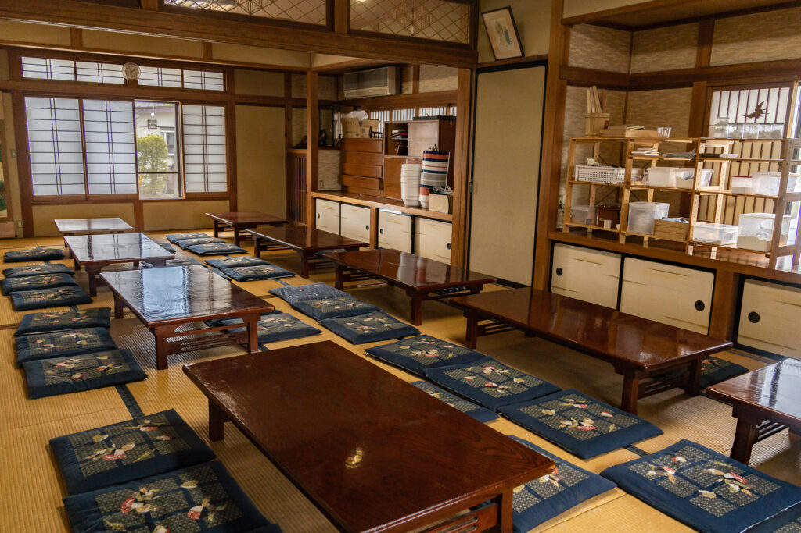
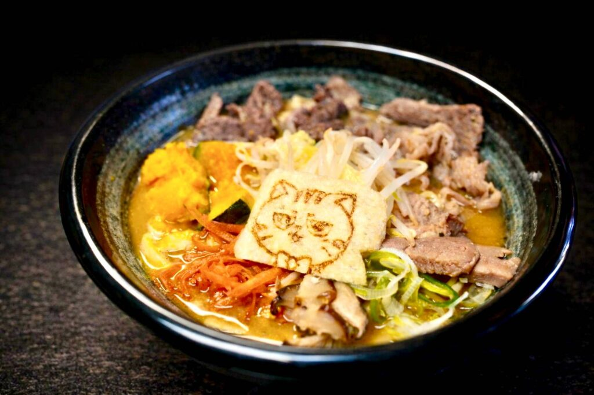
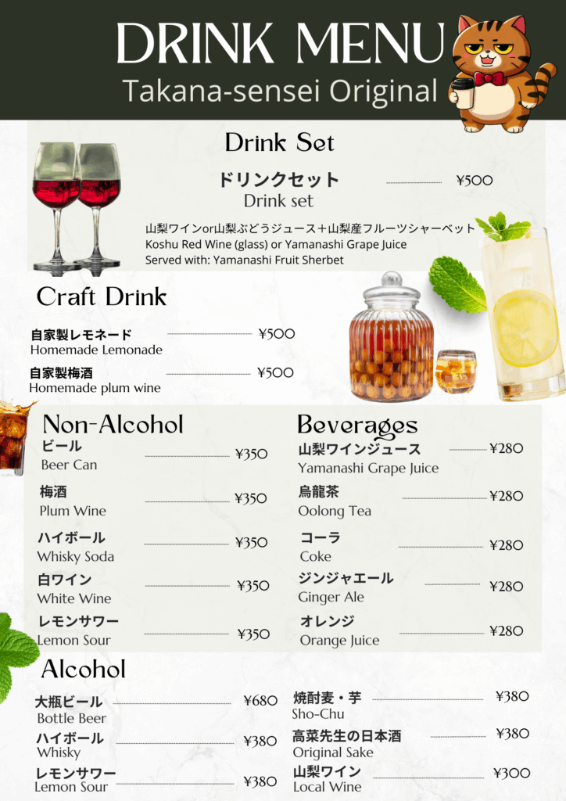
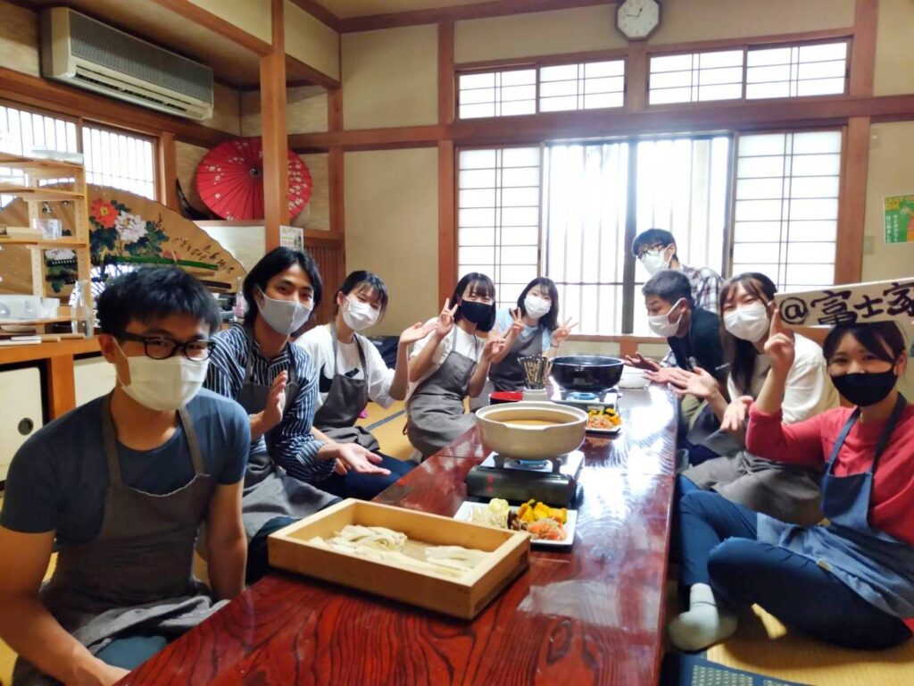
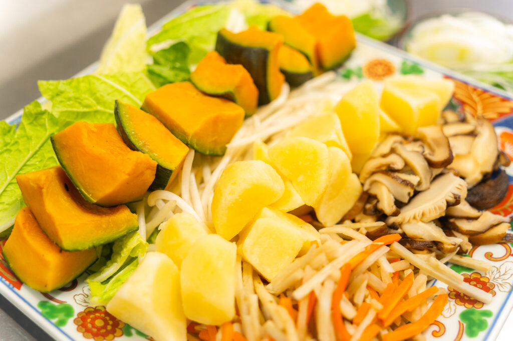

富士吉田市・山梨の名物ほうとうを知って食べていただきたいとの思いで、予約制でほうとうなどのランチ営業を行っております。旅行会社様、学校・部活動、企業様、インバウンド団体まで幅広いお客様にご利用いただけます。
河口湖周辺では珍しい団体様受け入れも行っております。甲府店でも40名様まで受け入れております。
こんな方にオススメ
お申込み — 24時間受け付けております
お問い合わせはこちら →土日祝は団体ディナーも受付中
平日ランチのほか、土曜・日曜・祝日はディナータイムも団体様のご予約を承っております。
Plan A
ランチと同じメニュー
ほうとう・そば・うな丼など、ランチで提供しているメニューをそのままディナーでもご注文いただけます。ドリンクは別途単品でご注文可能。
Plan B
飲み放題付き宴会コース
鍋・うな丼・馬刺しなど全10品＋2.5時間飲み放題込みの宴会プランもご用意。8名様から貸切対応可能です。
Standard
スタンダード飲み放題
コース料金込み
サワー / ハイボール / 焼酎 / 日本酒 / 梅酒 / ワイン
ソフトドリンク各種
※ビールは含まれません 2.5時間制
Premium
プレミアム飲み放題
+¥500
瓶ビール / 地酒（七賢）
甲州ワイン
※スタンダードのドリンクも全て含む
Drink Menu
飲み放題なしの場合もドリンクは別途ご注文いただけます。
山梨ワイン / 瓶ビール / 自家製梅酒 / ウイスキー / ソフトドリンク各種
土曜・日曜・祝日限定 ／ 要予約（前日までにLINEまたはお電話にて） ／ 8名様〜貸切対応（最大80名様）
宴会コースの内容・料金詳細はこちら
宴会コース・料金を見る →ほうとうランチの詳細

ほうとうは山梨県全域で古くから親しまれている郷土料理です。厚めに切った平打ちの小麦粉の麺を、かぼちゃ・にんじん・じゃがいも・しいたけなどの季節の野菜と一緒に、味噌ベースの汁で煮込んで作ります。
当店のほうとうランチでは、20名様以上の場合は複数名様が一緒に一つの鍋を囲んでお召し上がりいただく形式となっております。お席にてほうとうを煮込んでいただく流れとなりますので予めご了承ください。

ほうとうランチ 料金表
富士山麓名水そば
心をほっと落ち着ける、日本の味。富士山の名水で作ったそばは世代を問わず人気の安心メニューです。様々な旬の味覚のそばをお選びいただけます。
うな丼
外はパリッと香ばしく、中は驚くほどふっくらと。秘伝のタレが染み込んだ炊き立てのご飯とともに、一口ごとに広がる幸福感をお楽しみください。

おすすめトッピング
山梨の和牛である甲州ワインビーフは各お食事におつけできます。

お飲み物
どの料理にも追加可能です。大人数の場合は事前にご予約いただけるとスムーズです。瓶ビール、自家製梅酒、ウイスキー、ソフトドリンク各種ご用意しております。

夜は宴会も承ります

全10品・2.5時間飲み放題込みの全8コース。ジビエ・海鮮・ワインビーフ・二郎系・麺打ち体験付きまでご用意。8名様〜貸切対応。
① Jiro-style
二郎系豚骨醤油鍋
¥5,000
② Gibier
鹿と鶏の具だくさん味噌ほうとう鍋
¥5,500
③ Spicy
鹿肉と大エビの旨辛鍋
¥5,500
④ Seafood
牡蠣と大エビの味噌鍋
¥6,000
⑤ Seafood
金目鯛と帆立の黄金寄せ鍋
¥6,500
⑥ Premium Meat
甲州ワインビーフと鶏の味噌ほうとう鍋
¥6,500
⑦ Seafood Supreme
海鮮全部のせ極み鍋
¥7,000
⑧ Experience — 山梨を全部食べ尽くす
鮑・馬刺し・ほうとう・ワインビーフ 全部込み
¥8,000
税込・全込み
全コース10品・飲み放題2.5時間込み ／ 8名様以上で貸切対応（最大80名様） ／ 麺打ち体験は①〜⑦に+¥2,200で追加可能 ／ 料理のみは各コース¥1,500引き
お客様の様子



お客様の声・感想


よくあるご質問
はい、ご利用いただけます。最大70名様までお受け入れしております。それ以上の人数でも空き次第でご案内可能ですのでお気軽にお問い合わせください。
はい。かぼちゃやネギなどの具材（7種類ほど）は最初から入っています。全て野菜になります。※具材は仕入れ状況により一部変更になる場合がございます。
はい。スタッフは英語での対応もできますので外国からのお客様もお気軽にご利用ください。
はい。クレジットカードもご利用いただけます。（VISA / Mastercard / AmericanExpress）
観光バスも店舗前に駐車していただけます。最大3台駐車可能です。
ほうとうの具材は野菜のみ、スープもダシなし味噌で作っておりますのでご安心ください。
団体ランチに限り、予約制とさせていただいております。お問い合わせページから電話またはLINEにてご連絡ください。夜中や早朝でもLINEから24時間受け付けております。
ほうとうについて
ほうとうの美味しさ
ほうとうの美味しさは、濃厚でコクのある味噌味の汁と、もちもちとした食感の麺によるものです。使用される野菜から出る自然な甘味が汁に溶け込み、味噌と絶妙に絡み合って、奥深い味わいを生み出します。かぼちゃは煮込むことで甘みが増します。
ほうとうの栄養価

様々な野菜を具沢山に入れるため、ビタミンやミネラルをバランス良く摂取できます。かぼちゃのβ-カロテンは免疫力強化や皮膚の健康維持に役立ちます。年間を通じて体を温め、エネルギーを補給できる料理です。